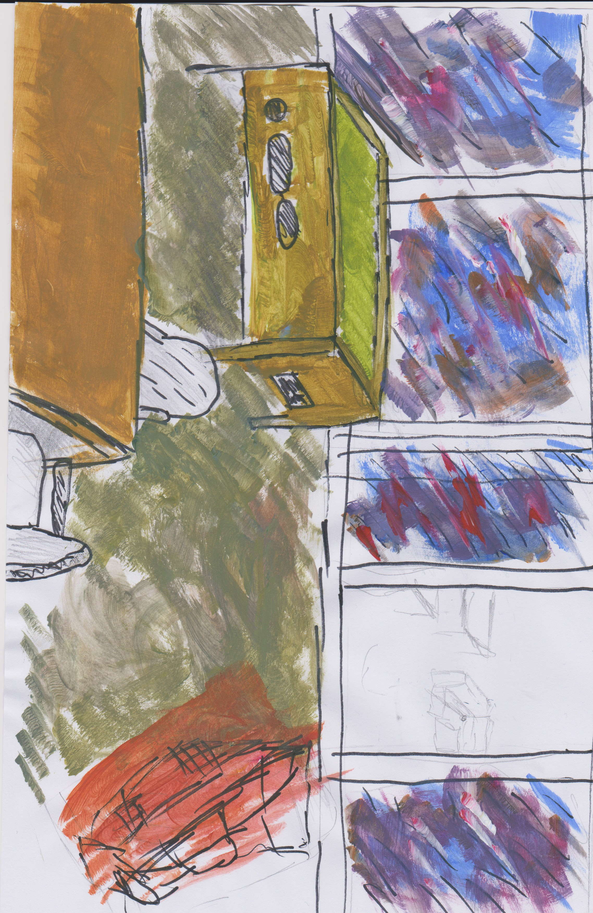

To the person reading this...
Watching this Video at bloody 5 in the morning was kind of stupid to be honest..
THE worst time to think of yourself is in the middle of the night,
When your alone and the world is still and quiet.
things feel different.
And not in a bad way, the quiet is nice, peaceful almost,
like the world is waiting for the noises to return.
And eventually... they do!
The Birds begin the rise, chirping as they begin they day,
Cars come to life as Humans start their drive to work.
Over the past few months, Remembering events and hangouts with friends has become easier,
i feel less of a burden, and more of a companion,
someone They can rely on, and I love that,
being apart of someone's life, being able to let them open up and just BE...
I'm not ok, I know that.
And sometimes i wish people could see that immediately when they see me,
but I know i put the mask up when I'm around others.
Its the norm for me to do that,
like its not even on purpose, smiling,
laughing and saying that I'm ok is Easy,
its what I think people want to hear,
but its not the truth, the truth Hurts,
more than anything, its Sad, emotional,
and I don't want to burden those around me with the knowledge of my pain...
But without being open...
Without telling the truth...
Without being afraid to change the mood...
You will still feel Lonely, like no one cares.
The video makes some good points, if you don't let people in,
let them see that part of you that isn't ok, that doesn't use the mask that was put on,
It becomes harder to see that you aren't ok...
Writing this in the early morning isn't great, but its honest.
To anyone who sees this Entry, first hello!.
and second..
Don't be afraid of being you, showing the side you try to hide so others don't get hurt.
you are never a burden in anyone's life and its ok to show that side of you, without doing that you feel less connected,
less of a person and more of a shell.
I know that I've done it, put up a mask so others feel better,
but in the end... all it does is hurt you more than anything.
For the last message for today...
Live life to the fullest, never be afraid to take that step,
don't be afraid to be vulnerable to those around you, When I'm vulnerable with people,
I find I end up feeling just that little less lonely, that little less empty.
So don't wait to show and tell people about yourself, It may seem like they don't care,
or they don't want to know because they haven't asked first,
but its how you create connections, how you develop friendships.
and even, in the off chance,
find love.
Your Friend and Buddy: Dyllon Pearson :D

No Sad Video today, no deep introspective into what makes us human,
just me, a paintbrush, a marker and a pencil.
I decided I would try and recreate a place from memory,
So on Saturday me and a bunch of friends met up to go down to Bathurst and see the winter festival,
now that's not the only thing we did that day of course, but its the most memorable,
This pub we Stopped had this atmosphere I can only describe as, "MAN CAVE".
To be honest it reminded me of my Dad's man cave, little trinkets laying above on shelfs.
It was sorta nostalgic in a way.
I sorta miss when my dad had that area, it was cluttered sure, but it was his.
Sometimes I do wish that space was cleared while we still lived there, I would have been a Amazing hang out spot.
..oh well, eventually we moved, and well he died so.
ANYWAY
this Irish pub in Bathurst was really cool, with a pool table,
and some arcade machines.
To be honest all it was missing was some pinball and it would have been the perfect space for hangouts.
So a few days later, I wanted to try and recreate it from my memory,
and I think that I really captured the Importants, i.e the pool table and well regular table :D.
Anyway, I'm gonna wait for this to dry off so i can scan this with the printer, so you guys get the best look haha
this has been Your Friend and Buddy: Dyllon Pearson :D